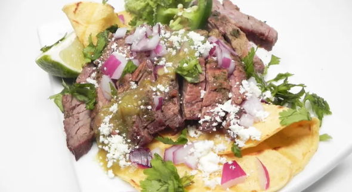

Home
Carne asada al cilantro

Description
Delicious Carne asada al cilantro
Ingredients
- ½ cup dark Mexican beer
- ¼ cup avocado oil
- ½ white onion, cut into large wedges
- 3 cups shredded mozzarella cheese, divided
- 1 cup fresh cilantro leaves
- salt and pepper to taste
- 2 pounds beef skirt steak
Steps
-
Combine beer, oil, onion, cilantro, onion, cilantro, salt, and pepper in
a blender; blend until cilantro marinade is smooth.
-
Place steak in a large resealable plastic bag and pour cilantro marinade
on top. Seal bag and shake to fully cover meat with the marinade.
Refrigerate at least 8 hours or overnight.
-
Preheat an outdoor grill for medium-high heat and lightly oil the grate
with avocado oil. Grill the meat, turning over once, about 3 minutes per
side for medium rare.